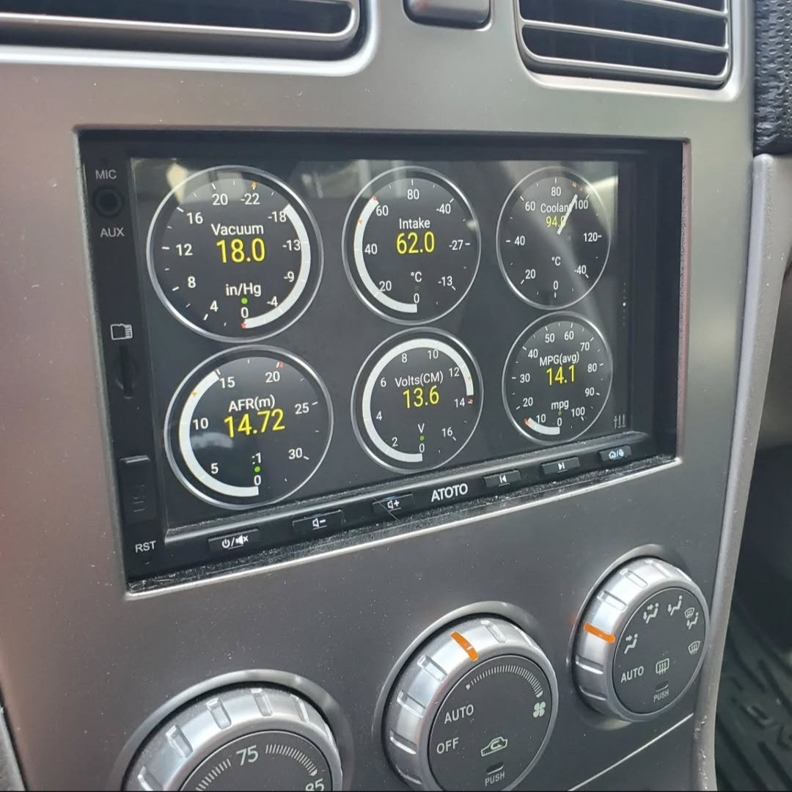
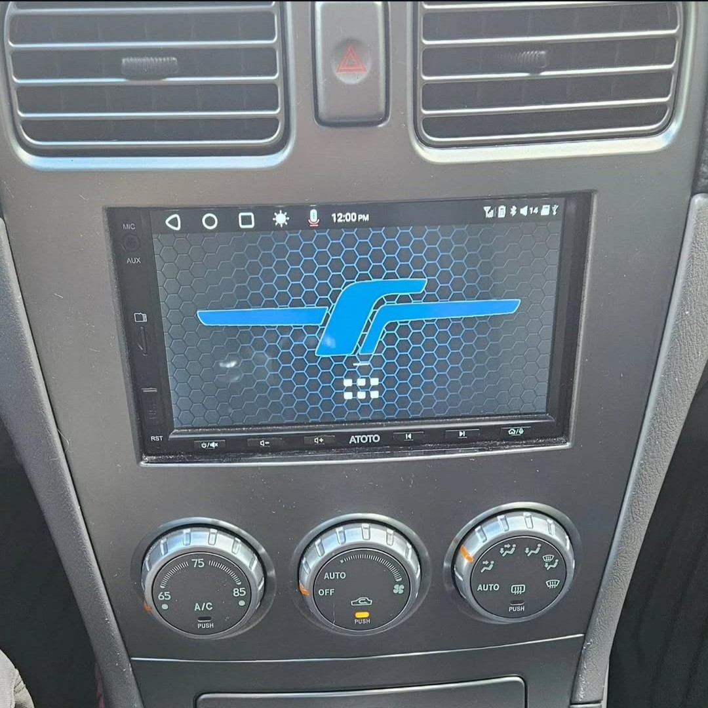

Atoto S8 Head Unit Installation
Upgraded my Forester with an Atoto S8 head unit, featuring custom graphics, OBD2 integration, backup cam, and seamless mobile connectivity.
Overview:
To enhance the infotainment system of the Forester, I upgraded to an Atoto S8 Gen2 head unit. This advanced system offers numerous features including a high-performance processor, deep customization with ATOTO AICE UI 11.0 based on Android Q, and multiple connectivity options for internet and device integration.
Key Features Installed:
Powerful Performance: Equipped with a UNISOC 7862 ARM Cortex Octa-Core CPU and ARM Mali-G52 MP2 GPU for high efficiency and performance.
Advanced Connectivity: Features dual Bluetooth for multiple device connection, WiFi, USB tethering, and options for both wired and wireless Android Auto and CarPlay.
Enhanced Audio and Display: Includes built-in Digital Signal Processor (DSP) with 32 adjustable frequency bands and a 7-inch 1024*600 full HD IPS display for superior visual and audio experience.
Navigation and Safety: Integrated GPS with support for multiple navigation apps and a Live RearView (LRV) feature to enhance field of view while driving.
Custom Modifications:
Backup Camera Integration: Connected the head unit to a backup camera installed on the spoiler, enhancing rear visibility and safety.
OBD2 Functionality: Incorporated an OBD2 reader to display real-time vehicle data using the Torque App, providing detailed insights into vehicle performance.
Personalized Touches: Designed a custom screen background featuring the JDM Forester "f" badge, adding a personal and unique aesthetic to the interface.
Seamless Mobile Integration: Installed a Quad Lock mount on the dash for easy phone charging and automatic Bluetooth connectivity, supporting hands-free use and streaming.
Installation Highlights:
Ensured a clean installation by using a pigtail wiring harness, allowing connection to the existing vehicle wiring without any modifications. This approach maintained the integrity of the Forester's electrical system while enabling full utilization of the head unit's features.
Custom Forester "F" Background:
To add a unique touch to the Atoto S8 interface, I created a custom JDM Forester "F" badge background. Using graphic design software, I refined the logo to fit perfectly within the screen dimensions. The final design was then exported in high resolution and uploaded to the head unit, giving the interface a personalized JDM aesthetic that seamlessly integrates with the Forester’s theme.
Future Upgrades Planned:
Audio Enhancements: Considering the addition of more powerful speakers, an amplifier, and a subwoofer to fully leverage the head unit’s audio capabilities.
Conclusion:
The Atoto S8 head unit significantly upgrades the Subaru Forester's functionality, making it a hub for both entertainment and essential driving information. With its modern interface and expandable options, the system sets a new standard for vehicle infotainment in an older model car.


